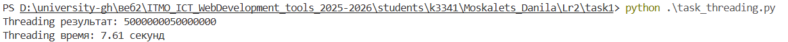
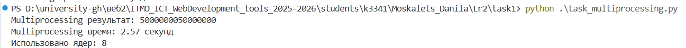
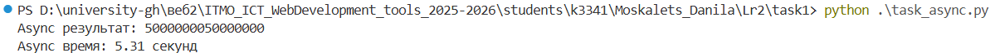
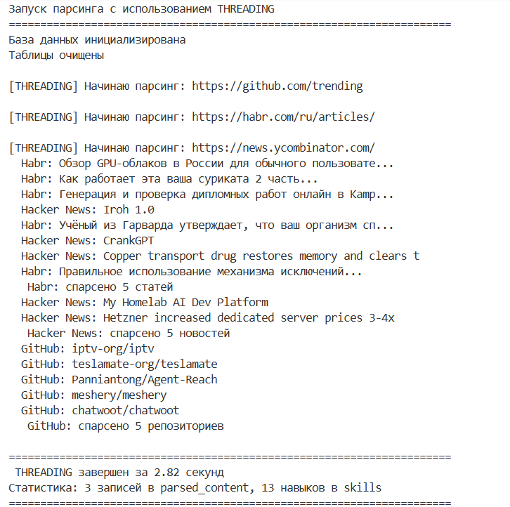
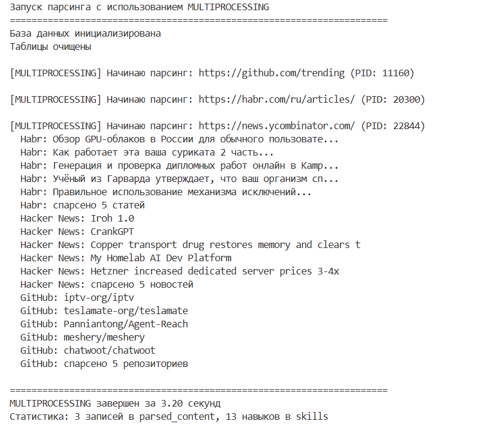
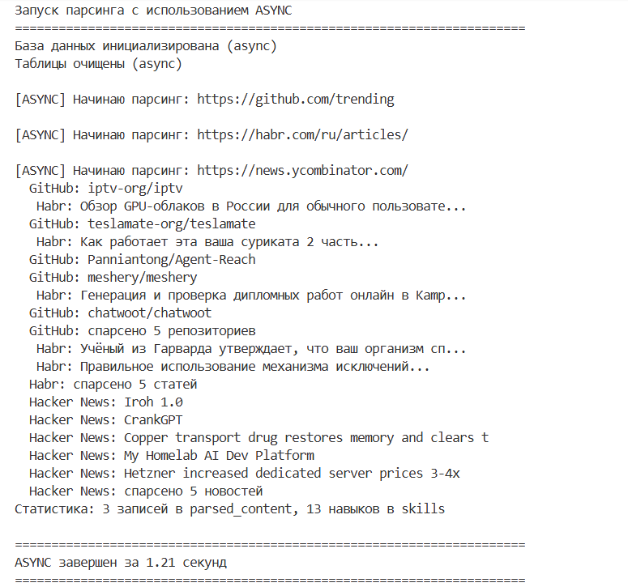

Лабораторная работа №2
Студент: Москалец Данила Алексеевич
Университет: ИТМО
Группа: К3341
Задание
Понять отличия между потоками (threading), процессами (multiprocessing) и асинхронностью (async) в Python на практике. Исследовать эффективность каждого подхода для двух типов задач:
- CPU-bound (вычислительные задачи) — суммирование большого диапазона чисел
- I/O-bound (задачи ввода-вывода) — парсинг веб-страниц с сохранением в базу данных
Задание 1: Сравнение подходов для CPU-bound задачи
2.1 Описание задачи
Написать три программы, вычисляющие сумму всех чисел от 1 до 10 000 000 (10 миллионов), используя:
- Threading (многопоточность)
- Multiprocessing (многопроцессорность)
- Async (асинхронность)
Для ускорения вычислений задача разбивается на 4 параллельные подзадачи.
2.2 Особенности каждого подхода
| Подход | Механизм | Особенности |
|---|---|---|
| Threading | Потоки в рамках одного процесса | Из-за GIL не дает реального параллелизма для CPU-задач. Подходит для I/O-bound задач. |
| Multiprocessing | Отдельные процессы | Каждый процесс имеет свой GIL и выполняется на отдельном ядре. Идеален для CPU-bound задач. |
| Async | Event loop + корутины | Предназначен для I/O-bound задач. Для CPU-задач требует использования многопроцессности или потоков. |
2.3 Результаты выполнения



2.4 Итоги
-
Multiprocessing оказался самым быстрым (2.57 сек), так как каждый процесс имеет свой GIL и выполняется на отдельном ядре процессора, обеспечивая реальный параллелизм.
-
Threading показал худший результат (7.61 сек) из-за GIL одновременно выполняется только один поток, а переключение между ними создает дополнительные накладные расходы.
-
Async занял 5.31 сек, но по сути под капотом использовал multiprocessing, а дополнительные 2.74 секунды ушли на асинхронную обертку.
Итог: для вычислительных задач оптимален только multiprocessing - threading бесполезен, async неэффективен.
Задание 2: Сравнение подходов для I/O-bound задачи
3.1 Описание задачи
Написать три программы для параллельного парсинга веб-страниц с сохранением данных в базу данных:
| URL | Тип данных | Что парсим |
|---|---|---|
| https://news.ycombinator.com/ | Hacker News | Заголовки новостей, домены |
Данные сохраняются в PostgreSQL:
- parsed_content - заголовки и краткое содержание
- skills - извлеченные теги/хабы/языки как потенциальные навыки
3.2 Особенности реализации
| Подход | Библиотеки | Механизм |
|---|---|---|
| Threading | requests, threading | Синхронные запросы в отдельных потоках |
| Multiprocessing | requests, multiprocessing | Синхронные запросы в отдельных процессах |
| Async | aiohttp, asyncio, asyncpg | Асинхронные запросы, неблокирующая работа с БД |
3.3 Результаты выполнения



3.4 Выводы (Задание 2)
Анализ полученных результатов
В ходе выполнения второго задания были получены следующие результаты:
| Подход | Время выполнения | Количество спарсенных записей |
|---|---|---|
| Threading | 2.82 сек | ~15 |
| Multiprocessing | 3.20 сек | ~15 |
| Async | 1.21 сек | ~15 |
Async показал лучший результат (1.21 сек), так как идеально подходит для I/O-операций. Event loop позволяет одновременно ожидать ответы от нескольких серверов, не блокируя выполнение кода.
Threading занял второе место (2.82 сек). Потоки хорошо справляются с I/O, но создают накладные расходы на переключение контекста и потребляют больше памяти.
Multiprocessing оказался самым медленным (3.20 сек). Процессы неэффективны для I/O: каждый процесс требует отдельное соединение с БД, большие затраты памяти и времени на создание.
Итог: для I/O-задач оптимален async - он минимально нагружает систему и максимально утилизирует время ожидания.
Общий вывод по лабораторной работе
Выбор подхода зависит от типа задачи:
- Для вычислительных задач (CPU-bound) эффективен только multiprocessing - он обходит GIL и использует все ядра процессора.
- Для задач ввода-вывода (I/O-bound) лидирует async - неблокирующие операции и event loop дают максимальную производительность.
- Threading занимает промежуточное положение: он бесполезен для вычислений из-за GIL, но может применяться для I/O, когда async сложен в реализации.